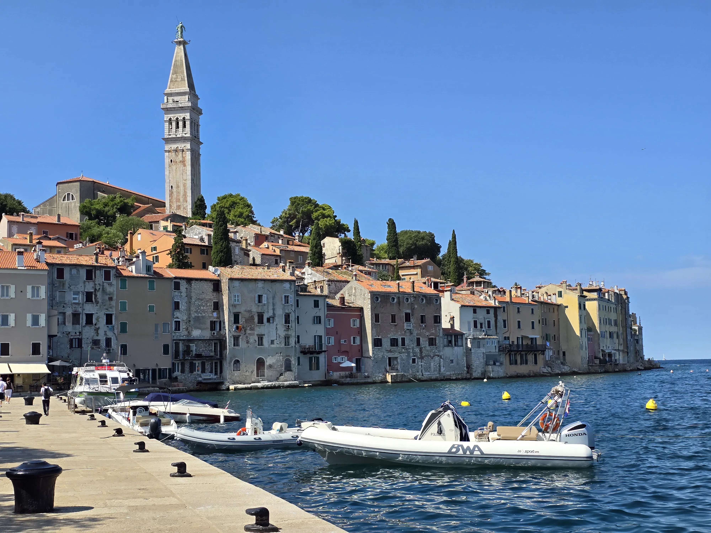
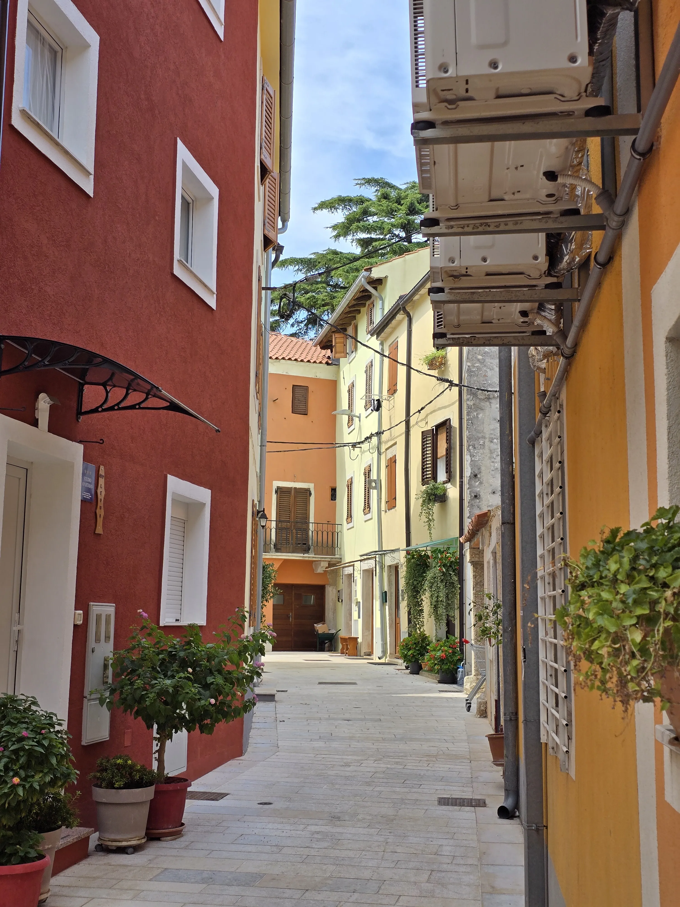
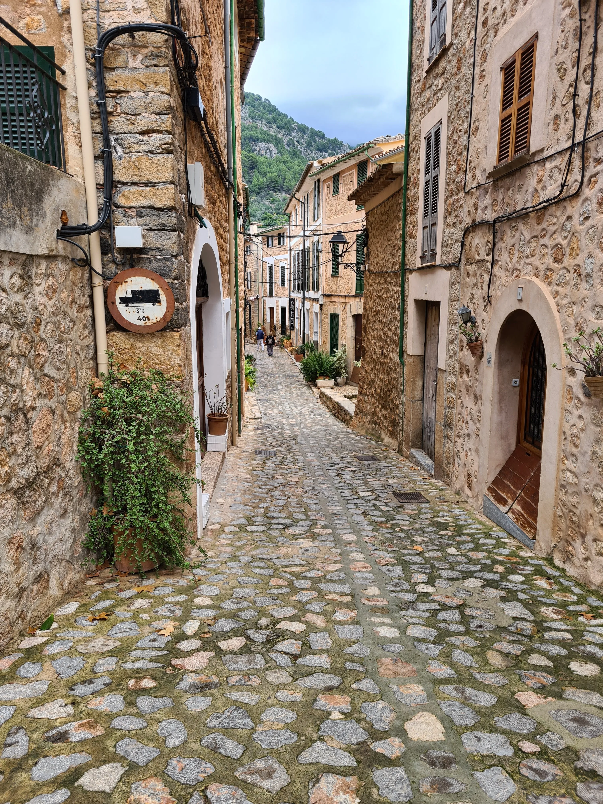

Rovinj
Rovinj ist eine malerische Küstenstadt mit engen Gassen, bunten Häusern und einem lebendigen Hafen. Ideal zum Spazieren und Fotografieren.

Rovinj ist eine malerische Küstenstadt mit engen Gassen, bunten Häusern und einem lebendigen Hafen. Ideal zum Spazieren und Fotografieren.

Novigrad bietet eine hübsche Altstadt und entspannte Strände. Perfekt für ruhige Tage am Meer und lokale Küche.

Fornalutx ist ein charmantes Bergdorf mit traditioneller Architektur und schönen Wanderwegen in der Umgebung.